Yagami
Yagami é um personagem central em "Death Note". Sua inteligência aguçada e ambição o levam a descobrir e utilizar o Death Note, desencadeando eventos complexos. Acompanhe a jornada de Yagami enquanto ele explora os limites do poder e moralidade.


 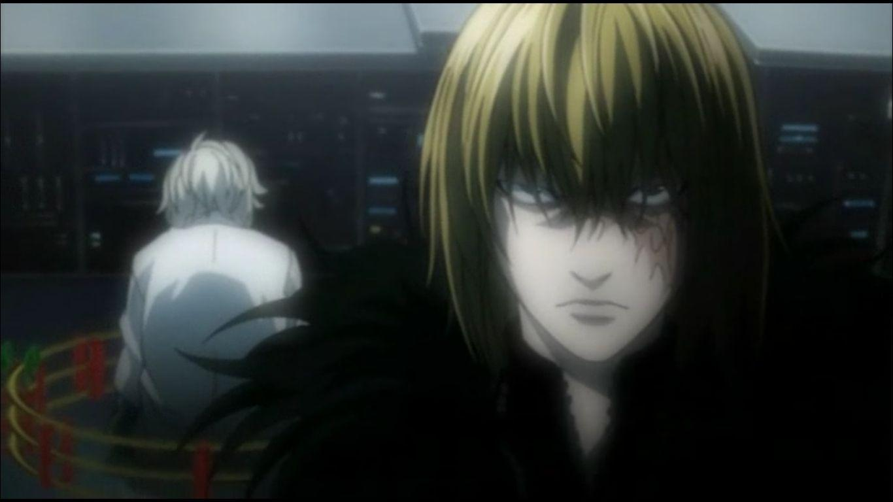
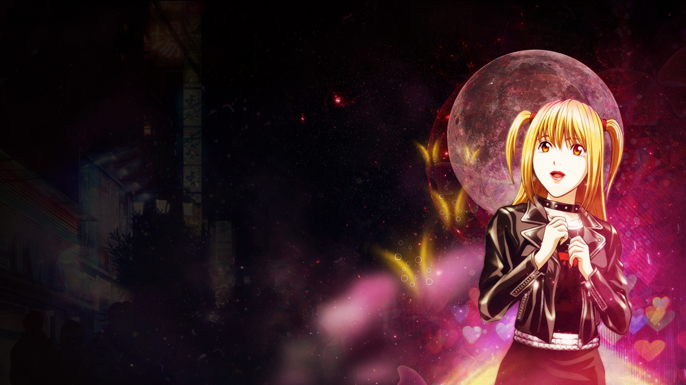
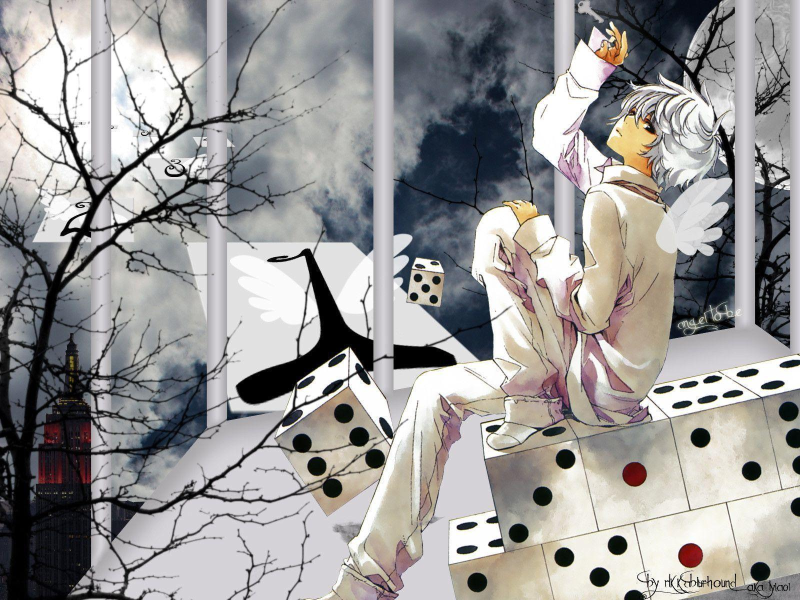
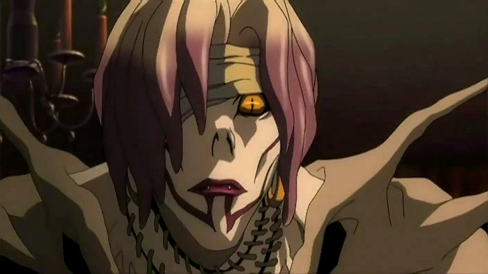
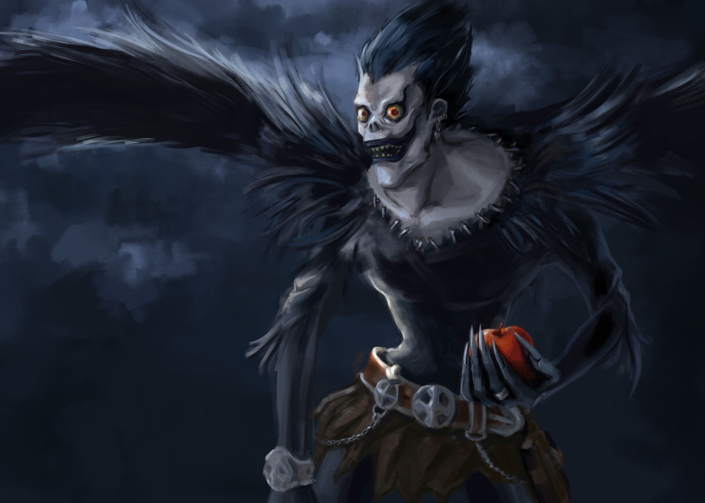
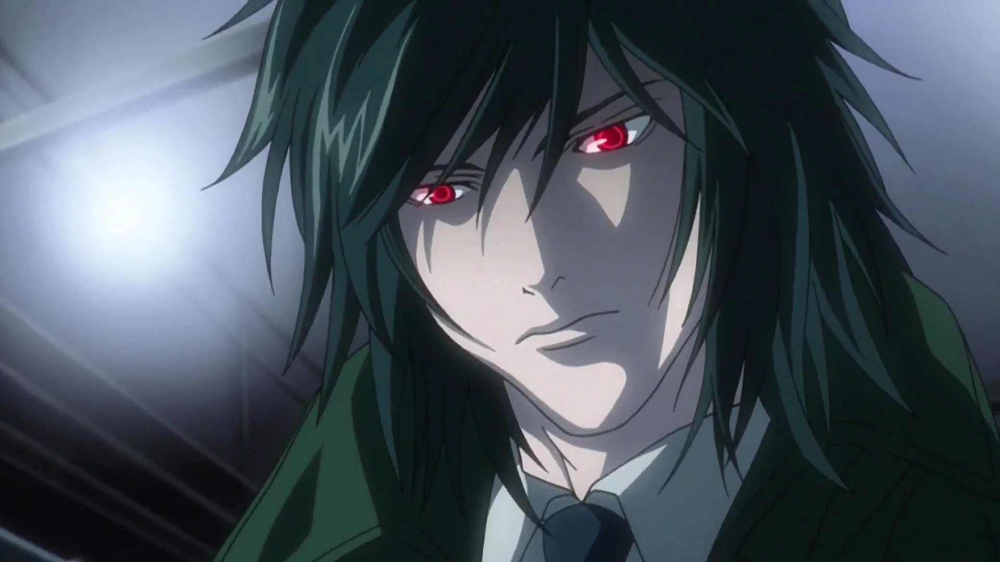
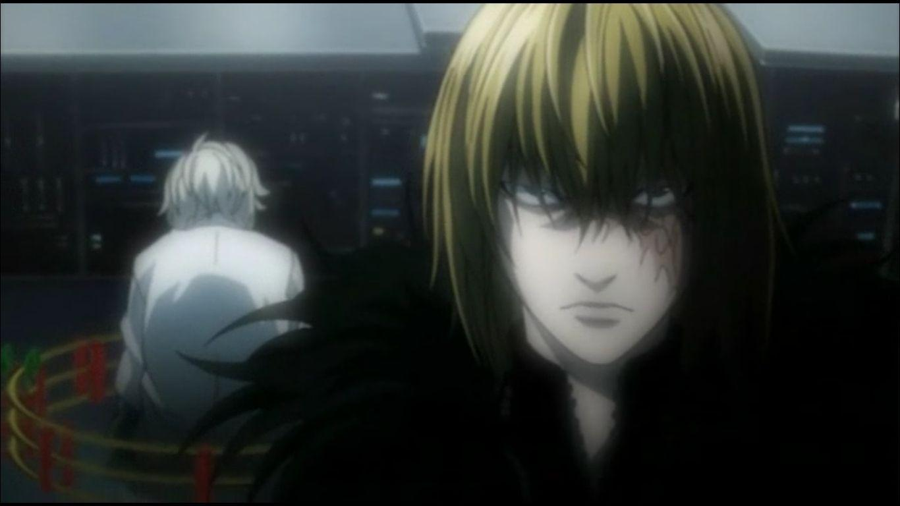
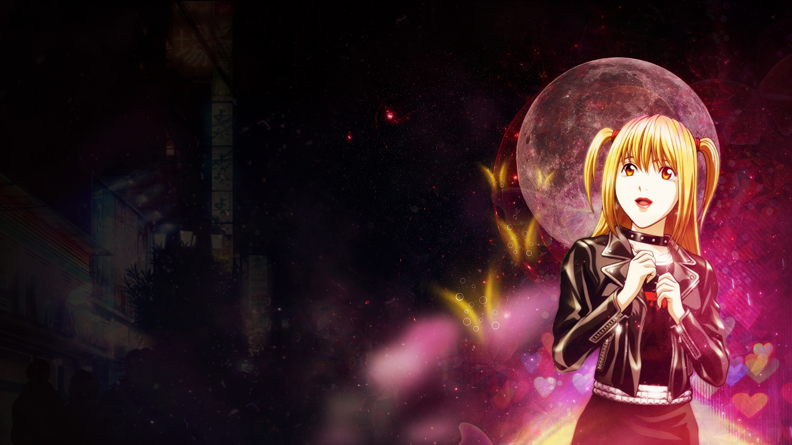
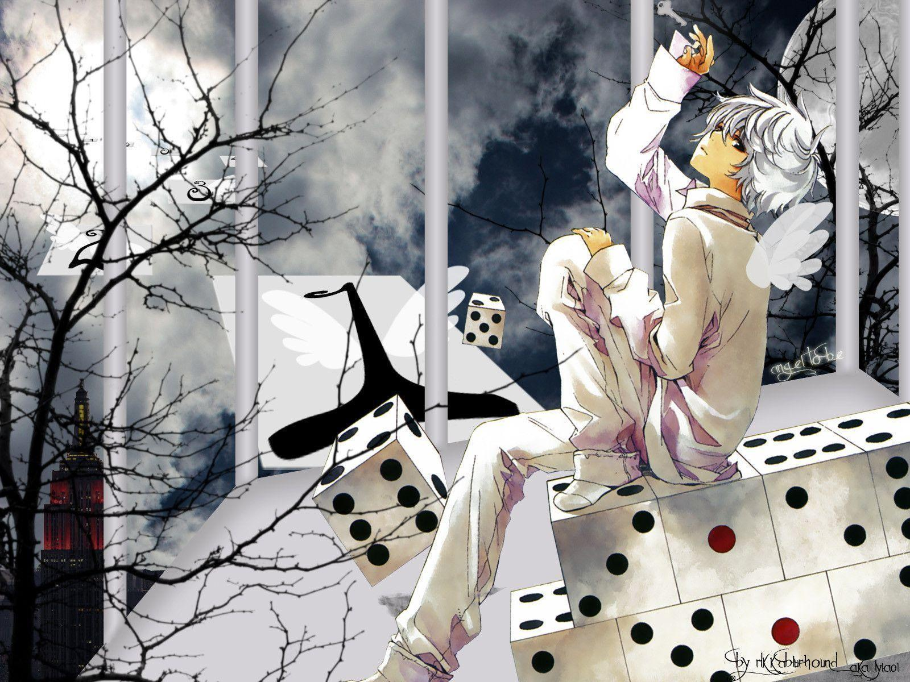
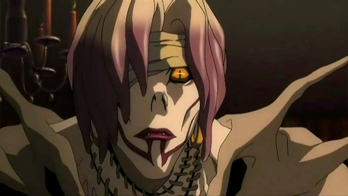
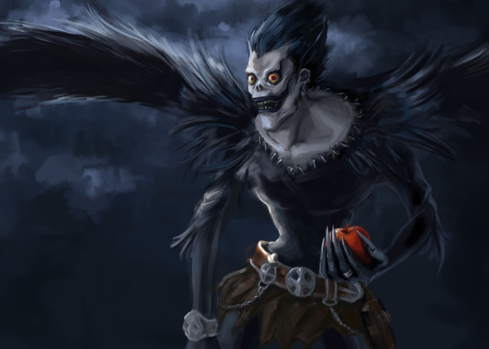
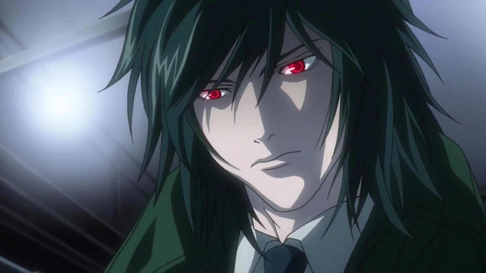